[程式] 零技術如何請 AI 開發 App - PWA實作紀錄
零技術背景也能請 AI 寫出一套真正可用、安全上線的 Web App 嗎？
「家中有食」是一套支援家人共用的食品庫存與到期提醒系統，採用 PWA，可加入手機主畫面使用。前端以 React、TypeScript 開發並透過 Vite 建置，後端使用 Hono、Cloudflare Workers，搭配 D1（SQLite） 保存資料；使用者透過 Google 登入，由工作階段 Cookie 與家庭權限檢查管理資料存取。系統整合 Gemini API 辨識食品照片，先保存為草稿，經人工核對期限後入庫，並提供庫存查詢、低庫存補貨清單，再透過 Cron 排程與 Web Push 推播發送手機提醒；多人操作則以原子操作、版本檢查及請求去重維持資料正確。
01 先說清楚：你想解決什麼？
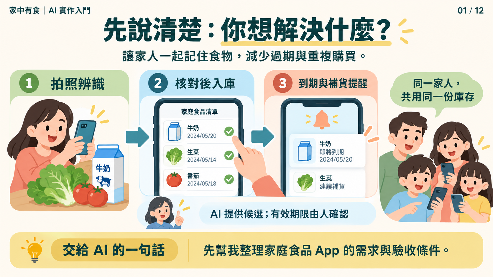
第一步先定義要解決的生活問題，不必先背技術名詞。
在家庭生活中，我們常遇到「買了重複的東西」、「放過期壞掉浪費」、「不知道家裡還剩多少」等問題。拍照只是輸入方法，真正的目標是 讓全家人清楚知道家裡有什麼、先用什麼、要補什麼 。
需求上必須嚴格劃分階段： AI 辨識到的內容先是「候選」，經人工核對入庫後才成為「正式庫存」 。
可複製 AI 實作提示詞
|
|
- 驗收重點 ：需求應明確區分辨識、草稿與正式庫存，並列出每個流程的成功與失敗條件。
02 看懂全貌：每個角色各司其職
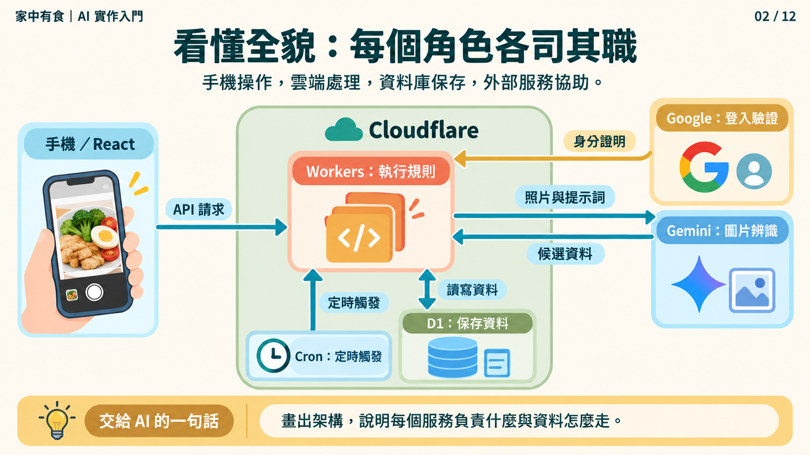
釐清需求後，接著要界定系統的 服務邊界 。不能把所有功能混為一談：
- 瀏覽器／手機 ：負責呈現介面與操作互動，絕不能直接存放私密 API 金鑰。
- Cloudflare Workers ：輕量高效率的邊緣運算環境，是後端程式執行的核心守門員。
- Cloudflare D1 ：雲端關聯式資料庫，負責持久化保存結構化資料。
- Google Identity Services ：專職驗證使用者身分。
- Google Gemini API ：專職讀取分析食材照片，由後端統一呼叫。
可複製 AI 實作提示詞
|
|
- 驗收重點 ：手機不可直接取得私密 API 金鑰或直接決定可存取的家庭資料；各服務分工清晰透明。
03 React 做畫面，Vite 整理成可發佈檔案
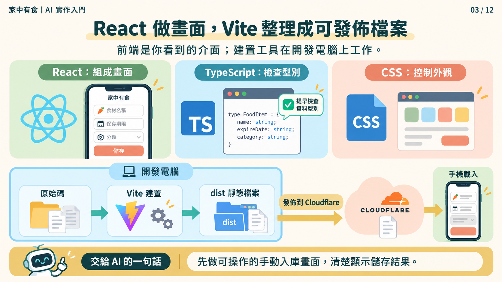
前端是使用者看得見摸得著的表單、清單與按鈕：
- React ：將複雜的介面元件化（如食品卡片、數量調整器）。
- TypeScript ：在程式編譯階段提前檢查型別錯誤，避免低級打字疏失。
- Vite ：提供極速的本機開發伺服器，並在正式部署前把程式碼打包成瀏覽器能執行的純靜態檔案。
在初期實作時，務必建立 清晰的假資料展示機制 ，假資料與真實保存必須明確區隔，切忌在 API 尚未接通前製造假成功的錯覺。
可複製 AI 實作提示詞
|
|
- 驗收重點 ：假資料與真保存可清楚辨識；按鈕點擊有操作回饋；手機版面文字與欄位不被裁切。
04 API 是入口，Workers 執行規則
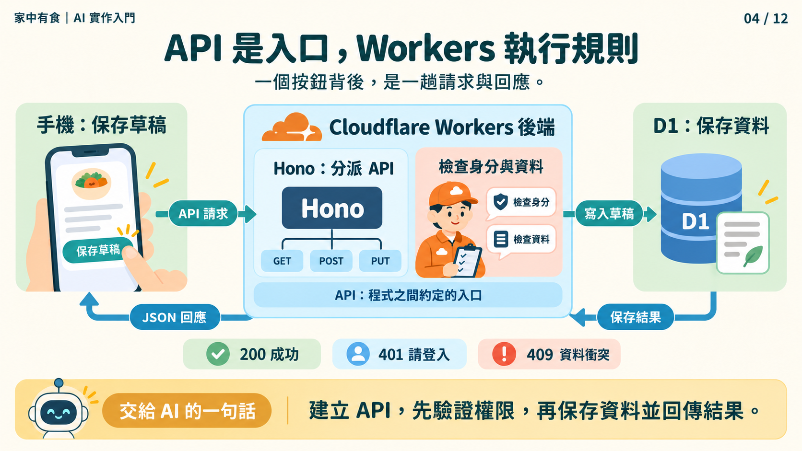
API 就像是餐廳的櫃檯點餐窗口，是前後端溝通的契約：
- 使用輕巧快速的 Hono 框架路由網址，把請求分派到相應邏輯。
- Workers 作為執行環境，在資料落盤前嚴格檢查格式（搭配
Zod檢查器）與家庭權限。 - 遇上資料衝突時（如家人已提前領取食材），後端主動回傳 409 Conflict ，防止舊畫面覆蓋家人的最新更新。
可複製 AI 實作提示詞
|
|
- 驗收重點 ：未登入或跨家庭操作必須被明確拒絕；錯誤訊息淺顯易懂；刷新頁面能確實取回已保存資料。
05 一個資料庫，多個家庭，各自隔離
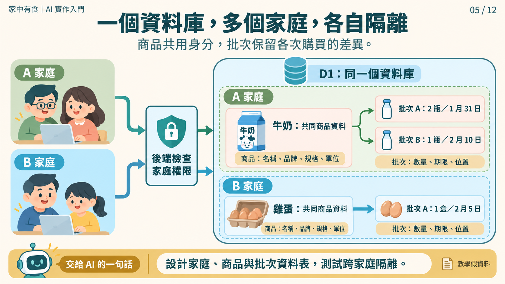
家庭庫存系統是典型的多租戶（Multi-tenant）應用：
- 嚴格的多家庭隔離 ：同一個資料庫服務多個家庭，後端查詢必須自動綁定
household_id，絕不可只在前端隱藏他人資料。 - 商品（Item）與批次（Batch）分離 ：
- 「全脂鮮奶」是 商品 （共同名稱、單位、警示天數）。
- 「上週買的牛奶（剩 1 瓶，後天過期）」與「今天買的牛奶（2 瓶，下週過期）」是 批次 。
- 修改商品名稱可以全家同步連動，但消耗數量絕不能改錯批次。
可複製 AI 實作提示詞
|
|
- 驗收重點 ：同商品多效期批次可獨立保存；跨家庭讀寫完全隔絕；升級資料庫時保留既有資料。
06 Google 證明身分，Cookie 記住登入
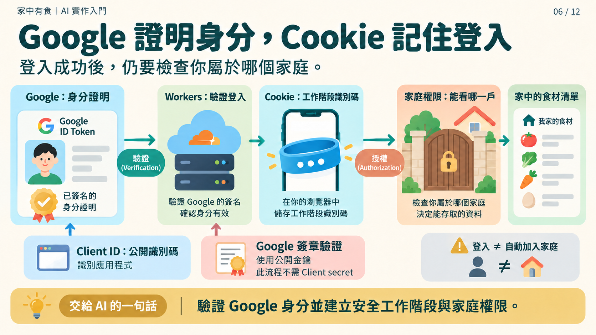
身分認證是系統安全的基石：
- Google 只負責證明「你是誰」 ：使用者透過 Google 登入取得 ID Token，後端驗證其簽章、時效與觀眾（Audience）。
- 後端自建工作階段（Session） ：驗證成功後，由後端核發專屬的 Session ID，寫入 HttpOnly、Secure 的 Cookie 。
- Cookie 就像遊樂園的 防偽手環 ，後續請求瀏覽器自動附帶，前端 JavaScript 無法讀取，大幅降低 XSS 竊取風險。
可複製 AI 實作提示詞
|
|
- 驗收重點 ：偽造或過期的 Token 無法登入；登出後 Session 立即失效；同帳號在不同裝置登入能順利取回所屬家庭。
07 Gemini 讀照片，後端把關候選
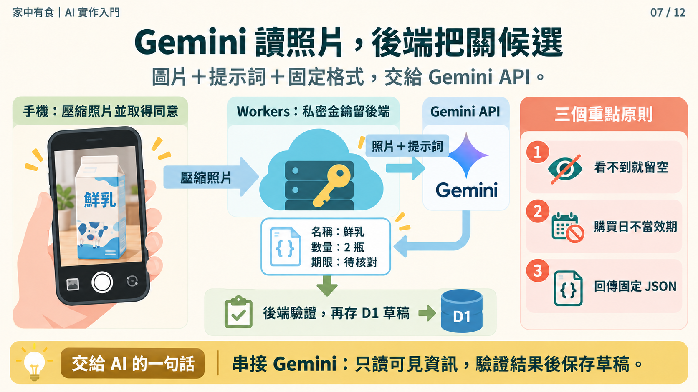
引入生成式 AI 時，必須有清醒的「防禦性設計」：
- 手機端先行壓縮 ：節省頻寬與後端處理資源。
- 後端安全代理 ：API 金鑰留在 Cloudflare 後端 Secrets，手機無法窺探。
- 嚴謹的結構化約束 ：設定 Prompt 要求繁體中文、只抽取看得到的文字，缺漏欄位給
null，嚴禁猜測；製造日期絕不可誤判為有效期限。 - 先入草稿，人工覆核 ：AI 辨識結果先存為草稿，避免模型幻覺直接污染正式庫存。
可複製 AI 實作提示詞
|
|
- 驗收重點 ：看不見的值不隨意猜測；購買日期不被誤當過期日；AI 辨識失敗時仍能手動輸入；API Key 絕不外洩。
08 辨識完成，還要經過確認入庫
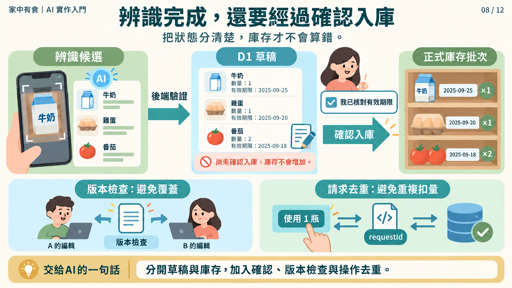
資料從草稿轉入庫存，是牽涉多人共用的關鍵環節：
- 樂觀鎖（Optimistic Locking）與版本檢查 ：避免兩人同時開啟畫面時，後存的人覆蓋先存的人。
- 冪等性出庫（Idempotency） ：出庫請求附帶唯一的
requestId，在網路不穩重複送出時，不會扣減兩次庫存。 - 原子操作（Atomic Transaction） ：檢查庫存量與扣減必須在同一個資料庫交易內完成，避免出現負數庫存。
可複製 AI 實作提示詞
|
|
- 驗收重點 ：同請求重送不多扣數量；多人並行操作不產生負數；草稿不計入可用庫存；明確區分過期與丟棄。
09 PWA：讓網站像 App 一樣打開
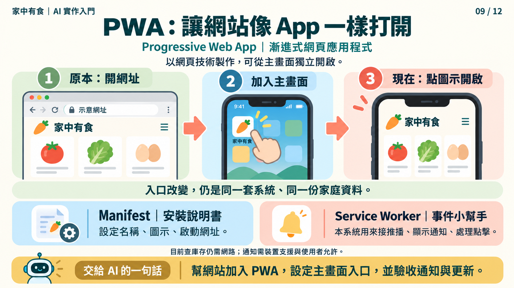
我們不需要一開始就花大錢上架雙平台 App Store：
- PWA 全名是 Progressive Web App（漸進式網頁應用程式） ：本質是現代網頁，但具備類似原生 App 的流暢體驗。
- Web App Manifest ：定義安裝到主畫面的名稱、Icon 圖示、啟動網址與獨立視窗外觀（Standalone）。
- Service Worker ：背景運作的小幫手，負責接收 Web Push 推播通知與處理使用者點擊事件。
- 觀念導正 ：加入主畫面不是把雲端資料庫搬到手機，查詢庫存仍需連網，避免過度宣稱離線同步。
可複製 AI 實作提示詞
|
|
- 驗收重點 ：手機主畫面可順利啟動獨立視窗；同帳號讀取一致資料；推播通知點擊能正確導向對應頁面。
10 雲端排程提醒，手機不必一直開著
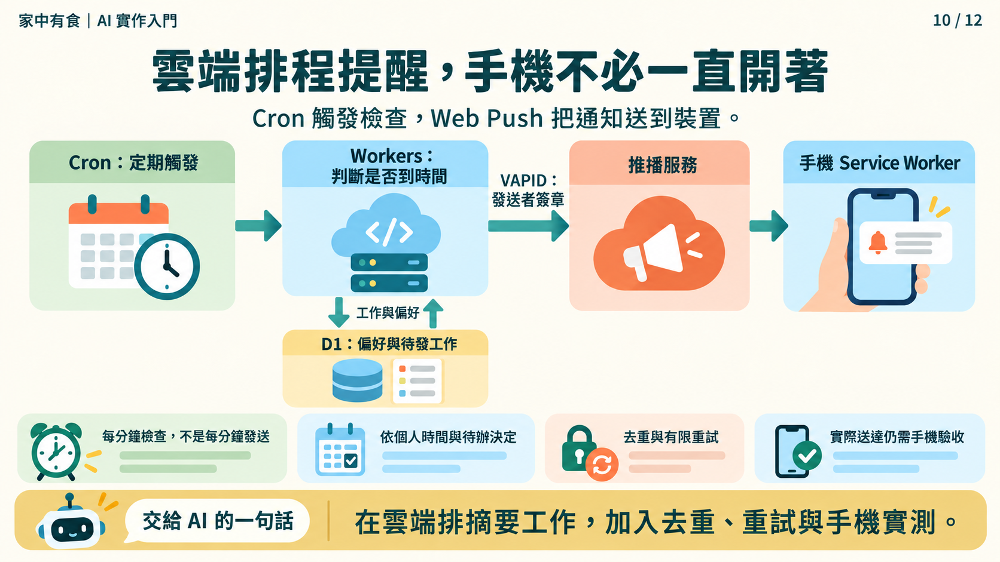
「過期通知」該如何運作？絕對不能依賴使用者把手機網頁一直開著：
- Cloudflare Cron Triggers ：雲端定期自動喚醒檢查（例如每天上午 9 點）。
- 個人偏好與去重 ：比對每位家庭成員設定的通知時間與到期天數，已處理或已丟棄的項目不再重複發送。
- Web Push 與 VAPID 認證 ：後端使用標準 VAPID 簽章發送推播至瀏覽器推播伺服器，再轉送至使用者裝置。
可複製 AI 實作提示詞
|
|
- 驗收重點 ：排程重跑不重複推播；過期品已吃完不再騷擾；關閉 App 仍能接收推播；圖示與點擊導向分開驗收。
11 上線：建置、備份、升級、發佈、驗證
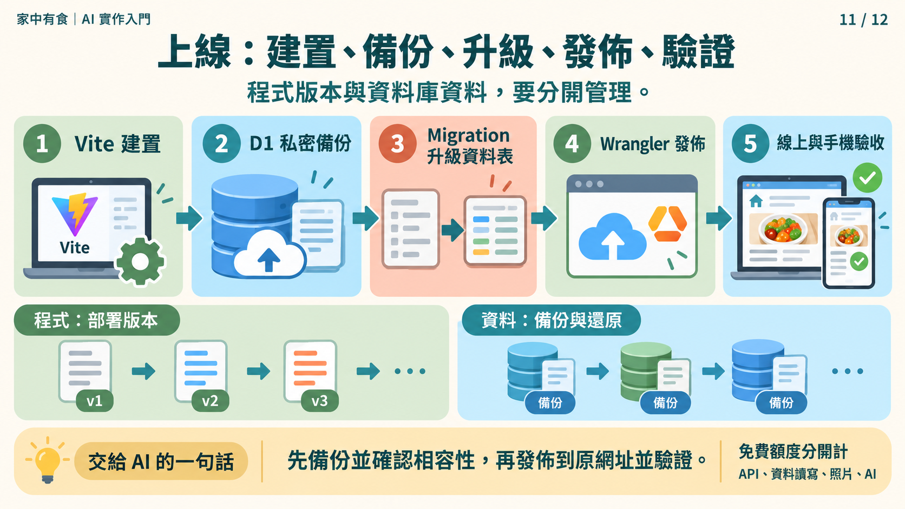
程式寫好了，如何健康長久地上線維運？
- Wrangler 工具鏈 ：統一打包靜態前端與後端 Workers 程式碼，一鍵安全部署到 Cloudflare 邊緣節點。
- 資料庫遷移（Migration）原則 ：修改資料表綱要前務必先備份，並確認新舊程式在部署過渡期具備向下相容性。
- 服務額度盤點 ：清楚掌握 Cloudflare Workers、D1 與 Gemini API 的免費額度邊界，避免無預警超額卡住。
可複製 AI 實作提示詞
|
|
- 驗收重點 ：資料庫升級平順不遺失資料；線上環境運作正常；金鑰不進版控；訂定可行的回滾復原方案。
12 請 AI 分階段實作，每一步都要能驗收
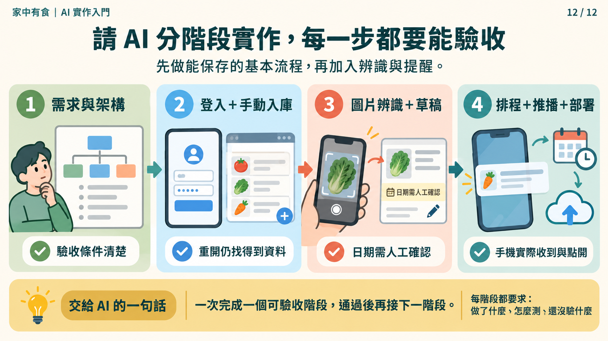
最後也是最核心的心法： 建立分階段實作節奏 。
切莫期待 AI「一步到位」替你做完上萬行系統，而是將專案劃分為四個穩紮穩打的階段：
- 階段一 ：釐清需求、資料模型與架構設計。
- 階段二 ：Google 登入、家庭成員權限、D1 資料庫、手動入庫與出庫流程。
- 階段三 ：Gemini 圖片辨識候選、草稿保存與人工確認機制。
- 階段四 ：低庫存購物清單、Cloudflare Cron 自動推播、PWA 與線上發佈。
每個階段要求 AI 交付 可驗收的具體證據 （如成功測試結果、畫面示範），並明確標示 尚未測試或受限的範圍 。
可複製 AI 實作提示詞
|
|
- 驗收重點 ：每一階段皆能逐步展示；重啟伺服器後資料完整存在；具備在真實手機端驗收的閉環。
結語
零技術並不代表無法主導軟體開發。當你清楚掌握 問題本質 、 系統架構分工 與 分階段交付標準 時，AI 將會是你最強大且最忠實的資深工程搭檔！